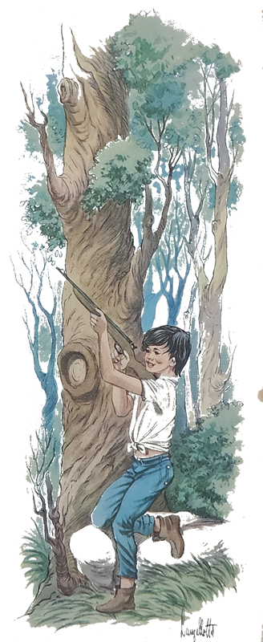
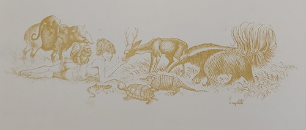
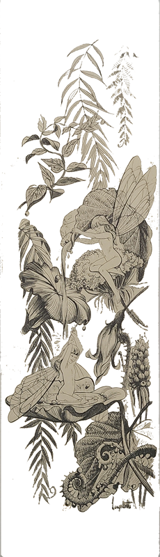
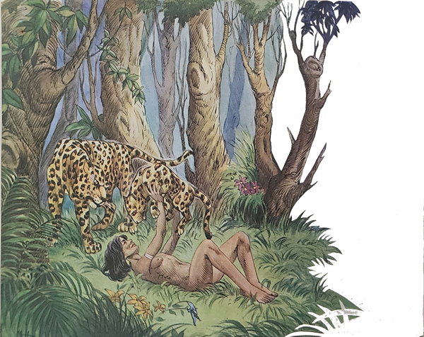
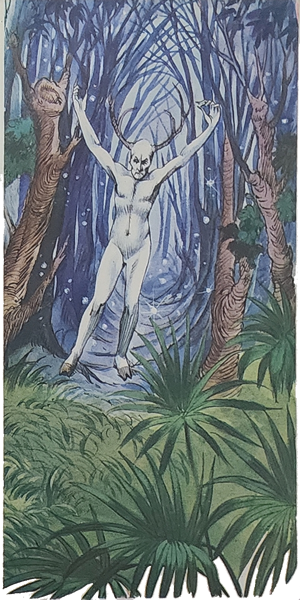
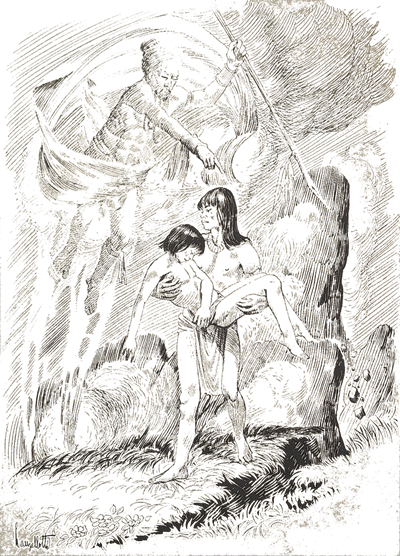
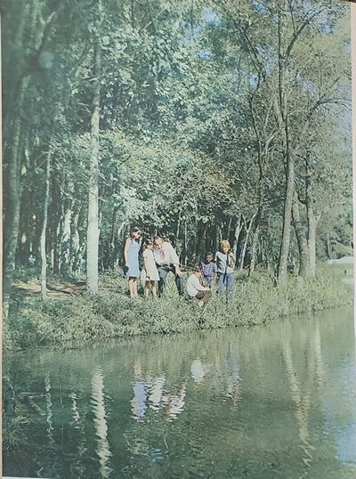

Terminando de tomar a primeira refeição, Carlinhos queixou-se do calor e disse que embora fosse de manhã, iria bem um guaraná. Pena que não tivesse.
O Arrelia lambeu os lábios e falou:
- Todos vocês gostam de guaraná, não é mesmo? Mas talvez não saibam que esta bebida é feita de uma semente. Quando a bebida é fabricada com o verdadeiro guaraná, é muito saudável.
As sementes do guaraná, depois de torradas e moídas, são amassadas e recebem mais ou menos a forma de um pão. Depois este pão é ralado e com o pó faz-se a bebida. Tem gente na Amazônia que usa a língua do pirarucu para ralar o guaraná. O pirarucu é um baita peixe, de mais de dois metros de comprimento, que pesa perto de cem quilos!
O guaraná possui muitas aplicações medicinais e é usado para curar diversas doenças. Os índios gostavam e gostam muito dele. Muito mesmo. Fizeram até uma estória sobre o seu nascimento.

Há alguns anos fiz uma viagem por esta selva, junto com uma porção de amigos, e estivemos em vários lugares. O nosso guia era um índio civilizado e sempre nos ensinava algum segredo da floresta
À noite, quando acampávamos, geralmente ficávamos falando sobre os mistérios da floresta ou sobre as bonitas lendas criadas pelos índios, que possuem impressionante imaginação.
O nosso índio civilizado havia recebido o nome de Antônio. E como era ele quem conhecia mais estórias das selvas, era sempre quem mais falava. E ficávamos horas e horas em volta do fogo, ouvindo o que ele contava.
Um dia, logo cedo, pouco antes de recomeçarmos a nossa caminhada, vi Antônio olhando atentamente alguma coisa que havia pegado. Nem piscava, tão “interessaudo” estava. Resolvi brincar com ele.
-Ué, Antônio! Você encontrou algum diamante? Está todo “compenetraudo”! Vai ver que ficou rico.
Ele virou a cabeça bem devagar e me disse:
- O senhor acertou. O que tenho na mão é um verdadeiro diamante. Até vale mais do que um diamante para os índios. É alimento e remédio.
- Não diga! Mas o que é então? – perguntei curioso
- É um bago de guaraná. Veja.
Fiquei olhando o que ele me mostrava na palma da mão.
- Não sabia que era tão importante assim. Para mim guaraná é refresco.
Antônio continuou:
- Os índios dão tanto valor ao guaraná que até criaram uma lenda sobre o nascimento dele.
oPedi a Antônio que me contasse a estória. Mostrou-me outra vez o que havia achado e falou:
- Veja como é parecido com um olho humano. Não é verdade?
- De fato. Parece mesmo. Mas o que tem isso?
Saberá depois que eu lhe contar a estória.
Pois comece a contar que estou curioso.
O índio guardou o bago de guaraná no bolso e me respondeu:
- Agora não. É hora de trabalhar. Vamos recomeçar a caminhada. Contarei quando for noite e estivermos descansando.
Insisti com ele mas não adiantou. O “danaudo” do índio não misturava uma coisa com outra. Hora de trabalho era hora de trabalhar. Hora de descanso era hora de descansar. Passei o dia pensando naquela estória.

Mal havia anoitecido e já estávamos jantando sentados em volta da fogueira. Tínhamos acampado numa clareira rodeada de árvores enormes. Eu disse aos outros:
- Hoje o Antônio tem uma estória interessante para nos contar.
Todos bateram palmas. O índio não esperou mais. Tirou o bago de guaraná do bolso e disse:
- Todos já terminaram de comer? Bem, então é hora de contar estórias. Vou contar a lenda do guaraná.
Há muitos e muitos anos vivia na selva um casal de índios que era muito feliz. Os dois eram muito jovens, davam-se muito bem e toda a tribo gostava deles. Mas faltava uma coisa para que fossem completamente felizes: um filho. Resolveram pedir ao deus Tupã que realizasse o seu desejo. Tupã ficou com pena deles e lhes deu um menino muito forte e bonito. Toda a tribo ficou contente. Agora nada mais faltava para aquele casal.
O tempo foi passando e a criança ficava cada vez mais forte e bonita. Era um menino muito vivo e tinha sempre alguma coisa em que empregar o tempo. Se não estava ajudando sua mãe a fazer algum serviço, ia com o pai à caça ou à pesca. O menino, porém, não gostava de matar nenhum bicho. Quando não tinha mesmo nada que fazer, visitava os outros índios com os quais sempre aprendia alguma coisa pois era muito inteligente e curioso. Por ter um coração cheio de bondade era admirado por todos. Seus pais eram o casal mais feliz daquela tribo. Ninguém possuía um filho assim.
Pouco a pouco o menino foi conhecendo a vida e os segredos da floresta, aonde ia sempre acompanhado.

Havia uma coisa que o deixava muito curioso. Era Jurupari, o espírito do mal. Tinha ouvido alguns dos mais velhos falarem rapidamente sobre este demônio. Todas as vezes, porém, que o menino pedia que lhe contassem quem era e o que fazia Jurupari, eles nada diziam. Achavam que ele era muito novo para tão terrível conversa. E assim este ficou sendo o único segredo que o menino desconhecia.
- Puxa, Antônio! – exclamei. Até agora você não falou do guaraná.
- Calma, calma! Chegarei lá!
Antônio aproveitou a pausa para tomar fôlego. Depois começou a mordiscar um pedaço de carne que havia sobrado. Todos nós também aproveitamos para mudar de posição e beber alguma coisa.
Antônio prosseguiu:
- Pois é. Naquele tempo não havia guaraná.
- Não havia? – perguntei. Então quanto tempo faz?
- Não sei – respondeu o índio, já de cara “fechauda”. Só sei que não havia guaraná.
- Ora Arrelia – gritou um dos meus companheiros. Não arrelie! Deixe o homem contar a estória!

- Eu só queria saber – respondi. Está bem, não pergunto mais!
Antônio levantou-se:
- Se não querem escutar-me, vou dormir.
- Não! Nada disso! Continue! – pedi.
Antônio acomodou-se novamente e continuou:
- Pois é. O único segredo que o menino não conhecia era o de Jurupari, o espírito do mal. Ruim e invejoso como não existe outro.
Tanto correu a boa fama do menino que chegou aos ouvidos de Jurupari. A partir daquele momento, ele começou a observar cuidadosamente o menino. Como Jurupari podia ficar invisível, ninguém percebia que ele andava por perto. Quanto mais o malvado observava o menino, mais raivoso ficava. Morria de inveja. Não podia suportar uma pessoa tão inteligente e bondosa. Foi embora para a selva tremendo de ódio e pensando: “Preciso vingar-me daquele menino. Não pode existir uma pessoa tão perfeita. É desaforo! Quando ele estiver sozinho!...”
O tempo foi passando e Jurupari não encontrava um modo de prejudicar o menino. Uma vez, na mata, quando estava observando a criança, que se encontrava com um companheiro, notou que ela possuía tão boas qualidades que era procurada pelas aves e pelos animais. O menino ficava no meio deles, conversando com um, acariciando a cabeça do outro.... Jurupari ficou tão furioso com o que viu que acabou assustando as aves e os animais. Os pobres saíram voando e correndo como loucos, deixando o menino sem saber o que havia acontecido. Ele foi embora muito triste pensando que os bichos não fostavam mais dele.
Como o menino gostava muito de frutas, sempre que podia procurava uma árvore que havia perto de onde morava e lá ficava escolhendo e comendo os frutos maduros. Era o único lugar a que ia sozinho.
Um dia Jurupari descobriu este seu costume e teve uma ideia: “Vou transformar-me numa cobra. Quando ele menos esperar estará mordido e sem salvação.

Jurupari ficou esperando nova oportunidade. Poucos dias depois a criança apareceu outra vez. Os frutos estavam muito bonitos e o menino correu para a árvore. O demônio transformou-se numa cobra e foi para perto do menino. Ele notou a presença da serpente, mas como não tinha medo de cobras, pois conhecia todos os seus costumes, continuou a comer calmamente. Ignorava que Jurupari podia transformar-se no que desejava. Ah! Se os mais velhos lhe houvessem contado... Jurupari tomou a cor da árvore e enrolou-se nela. O menino, satisfeito, estava descendo distraído quando foi atacado pela serpente. Tão forte era seu veneno que o menino morreu imediatamente. Seus pais, vendo que ele não voltava, começaram a perguntar a todos os índios se haviam visto o seu filho. Ninguém sabia onde ele estava. Foram todos à sua procura e encontraram o coitadinho. Ainda segurava algumas frutas que por certo ia levar para os pais, como costumava fazer. Ninguém ficou sem chorar. Que tristeza! Ninguém podia aceitar o que havia acontecido.
- Foi mordida de cobra. Veja! – disse um índio.
- Não é possível! – respondeu o pai. Ele sabia evitar uma serpente!
Um dos índios mais velhos, que até ali não dissera uma palavra, falou:
- Foi Jurupari. Era o único segredo da selva que ele não conhecia.
E ninguém parava de chorar. De repente, o ruído de um trovão cobriu todos os outros sons. Os índios ficaram assustados pois o céu não apresentava nenhuma nuvem.
Somente a mãe do menino compreendeu a mensagem:
- É a voz de Tupã. Ele quer dar-nos uma compensação. Deseja que plantemos os olhos do meu filho. Diz que brotará deles uma planta milagrosa, a qual dará frutos que nos farão felizes para sempre!
Os índios atenderam e enterraram os olhos do menino. E deles nasceu o guaraná. Guará, na língua dos índios, significa o que tem vida, gente, e ná, igual, semelhante. Assim traduzido, guaraná quer dizer: bagos iguais a olhos de gente.


